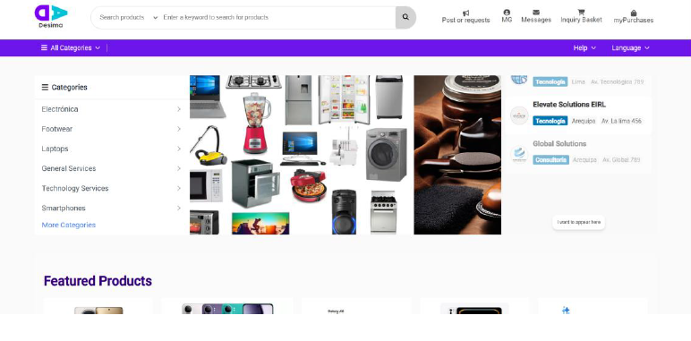

UniLink
Red social académica para estudiantes de TECSUP. Desarrollada con React, Django, Spring Boot, Kotlin y MySQL. Facilita la creación de grupos por intereses, fomenta la colaboración y promueve el desarrollo interpersonal.
Rol: Fullstack Developer y Coordinador Scrum
Competencias aplicadas: liderazgo empático, integración tecnológica, comunicación efectiva.

Trumont – Plataforma eCommerce (Pasantía)
Optimización de interfaz y experiencia de usuario para tienda virtual. Durante mi pasantía en Trumont, diseñé vistas responsivas, consumí servicios backend y apliqué buenas prácticas de desarrollo para mejorar la navegación y escalabilidad del sistema.
Rol: Frontend Developer
Competencias aplicadas: diseño UX/UI, manejo de errores, trabajo colaborativo.